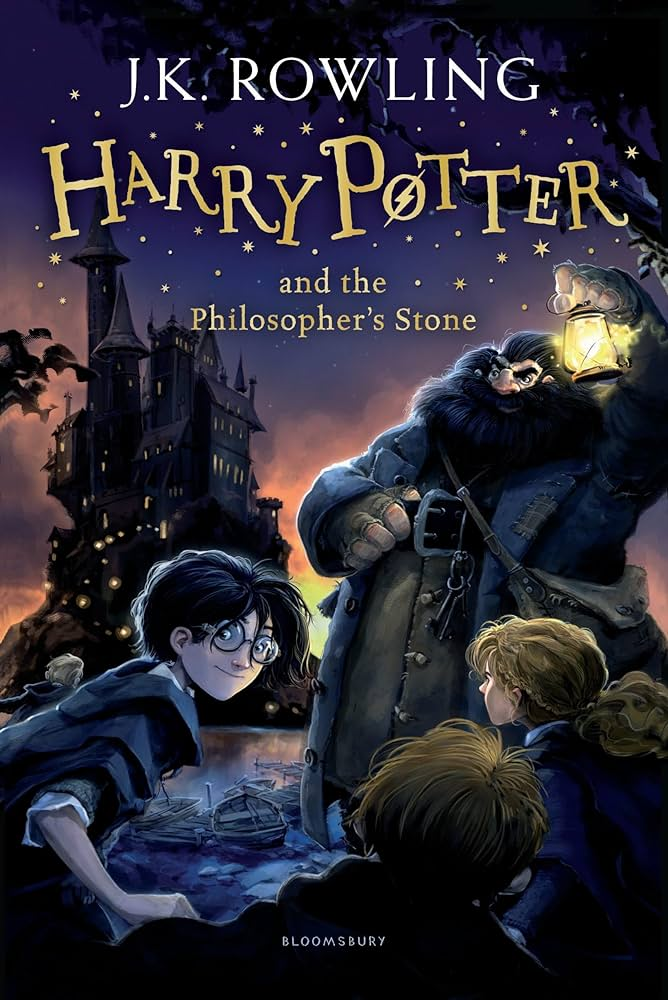
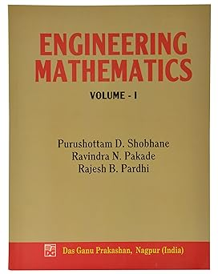

| Sr.no | Book Title | Author | Cover Page | Discription |
| 1. | The Big Bang Theory | Bill Prady |  | The lives of four socially awkward friendstake a wild turn when they meet the beautiful and free-spirited Penny. |
| 2. | Pshychology of Money | James Clear |  | Doing well with money isn't necessarily about what you know. It's about how you behave. And behavior is hard to teach, even to really smart people. |
| 3. | Harry Potter | J.K.Rowlings |  | Harry Potter, an eleven-year-old orphan, discovers that he is a wizard and is invited to study at Hogwarts. Even as he escapes a dreary life and enters a world of magic, he finds trouble awaiting him. |
| 3. | Engenering Mathmatics | P.D.Shobhane |  | This book, engineering mathematics is published by das ganu prakashan, ngapur and written by purushottam d. Shobhane, ravindra n.pakade, rajesh b.pardhi. This book is useful for engineering student as well as staff |
| 2. | Solo Leaveling | Chugong |  | Solo Leveling, also alternatively translated as Only I Level Up, is a South Korean web novel written by Chugong. It was serialized in Kakao's digital comic and fiction platform KakaoPage beginning on July 25, 2016, and was later published in full by D&C Media under their Papyrus label on November 4, 2016. |